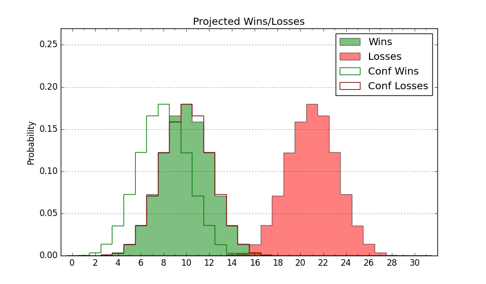

| Home | Game Probabilities | Conferences | Preseason Predictions | Odds Charts | NCAA Tournament |
| City: | Easton, Pennsylvania | |
| Conference: | Patriot (6th)
| |
| Record: | 8-11 (Conf) 10-21 (Overall) | |
| Ratings: | Comp.: -17.5 (326th) Net: -17.5 (326th) Off: 100.0 (316th) Def: 117.6 (316th) SoR: 0.0 (103rd) |
| Remaining | ||||||
|---|---|---|---|---|---|---|
| Date | Opponent | Win Prob | Pred. | |||
| Previous | Game Score | |||||
| Date | Opponent | Win Prob | Result | Off | Def | Net |
| 11/3 | @Saint Joseph's (141) | 7.3% | L 76-85 | 15.7 | -3.3 | 12.4 |
| 11/8 | @Texas (37) | 1.0% | L 60-97 | -8.4 | 1.3 | -7.1 |
| 11/13 | Cornell (158) | 23.3% | L 78-97 | -7.4 | -7.8 | -15.2 |
| 11/17 | @West Virginia (60) | 2.2% | L 59-81 | 4.1 | -0.7 | 3.5 |
| 11/21 | @Stonehill (327) | 36.2% | L 70-74 | -3.0 | -1.3 | -4.3 |
| 11/28 | Le Moyne (302) | 55.4% | L 63-76 | -17.0 | -4.4 | -21.4 |
| 11/29 | Ball St. (304) | 56.1% | W 55-37 | -15.9 | 42.9 | 27.1 |
| 11/30 | Monmouth (176) | 26.0% | L 74-88 | 3.4 | -16.3 | -12.9 |
| 12/5 | Mercyhurst (280) | 48.8% | W 79-71 | 19.6 | -5.6 | 14.0 |
| 12/8 | @Penn (156) | 8.1% | L 72-74 | 5.6 | 14.2 | 19.8 |
| 12/18 | @Charlotte (189) | 10.3% | L 67-81 | 10.1 | -15.7 | -5.7 |
| 12/20 | @Georgia Tech (162) | 8.5% | L 81-95 | 21.5 | -17.5 | 4.0 |
| 12/31 | Colgate (223) | 35.7% | L 77-85 | -1.4 | -3.4 | -4.8 |
| 1/3 | @Loyola MD (328) | 36.2% | W 79-64 | 16.0 | 16.7 | 32.8 |
| 1/7 | Boston University (270) | 45.6% | L 67-83 | -13.3 | -12.0 | -25.3 |
| 1/10 | @Navy (139) | 6.9% | L 50-76 | -17.1 | 3.2 | -13.9 |
| 1/14 | @Bucknell (336) | 40.9% | L 69-76 | 0.6 | -8.5 | -7.9 |
| 1/17 | Holy Cross (329) | 66.7% | W 74-55 | 4.2 | 20.3 | 24.5 |
| 1/21 | @Boston University (270) | 19.8% | L 73-77 | -5.6 | 14.3 | 8.7 |
| 1/24 | @Lehigh (297) | 25.9% | L 59-64 | -10.4 | 15.3 | 4.9 |
| 1/28 | Bucknell (336) | 70.2% | W 81-79 | 18.7 | -17.6 | 1.1 |
| 1/31 | @American (269) | 19.8% | W 67-65 | 3.8 | 12.3 | 16.1 |
| 2/4 | Navy (139) | 20.2% | L 50-65 | -17.4 | 12.0 | -5.4 |
| 2/7 | @Army (339) | 42.1% | W 63-60 | -14.4 | 20.1 | 5.7 |
| 2/11 | Loyola MD (328) | 65.9% | L 54-68 | -29.5 | 5.5 | -24.0 |
| 2/14 | Lehigh (297) | 54.4% | L 69-78 | -1.1 | -15.9 | -17.0 |
| 2/18 | @Holy Cross (329) | 37.0% | W 86-83 | 13.7 | -7.7 | 6.0 |
| 2/22 | American (269) | 45.6% | L 61-75 | -1.2 | -15.4 | -16.6 |
| 2/25 | @Colgate (223) | 14.0% | W 70-69 | 10.2 | 7.2 | 17.4 |
| 2/28 | Army (339) | 71.2% | W 83-77 | 3.2 | -1.0 | 2.2 |
| 3/3 | Holy Cross (329) | 66.7% | L 77-82 | 2.8 | -17.3 | -14.5 |
| Stats & Trends | |||||
|---|---|---|---|---|---|
| Current | Day | Week | Month | Season | |
| Composite | -17.5 | +0.0 | -0.1 | -1.6 | -5.5 |
| Comp Rank | 326 | -1 | -3 | -13 | -36 |
| Net Efficiency | -17.5 | +0.0 | -0.1 | -1.4 | -- |
| Net Rank | 326 | -1 | -2 | -13 | -- |
| Off Efficiency | 100.0 | -0.0 | +0.4 | -0.8 | -- |
| Off Rank | 316 | -- | +5 | -19 | -- |
| Def Efficiency | 117.6 | +0.1 | -0.5 | -0.6 | -- |
| Def Rank | 316 | +2 | -2 | -5 | -- |
| SoS Rank | 323 | +2 | -8 | -10 | -- |
| Exp. Wins | 10.0 | -- | +0.3 | +0.2 | -3.2 |
| Exp. Conf Wins | 8.0 | -- | +0.3 | +0.2 | -0.8 |
| Conf Champ Prob | 0.0 | -- | -- | -0.0 | -9.3 |

| Advanced Stats | ||
|---|---|---|
| Stat | Value | Rank |
| Off Eff FG % | 0.478 | 298 |
| Off Ast Ratio | 0.147 | 178 |
| Off ORB% | 0.246 | 330 |
| Off TO Rate | 0.145 | 181 |
| Off FT Ratio | 0.326 | 244 |
| Def Eff FG % | 0.548 | 294 |
| Def Ast Ratio | 0.176 | 345 |
| Def ORB% | 0.319 | 253 |
| Def TO Rate | 0.126 | 315 |
| Def FT Ratio | 0.333 | 150 |